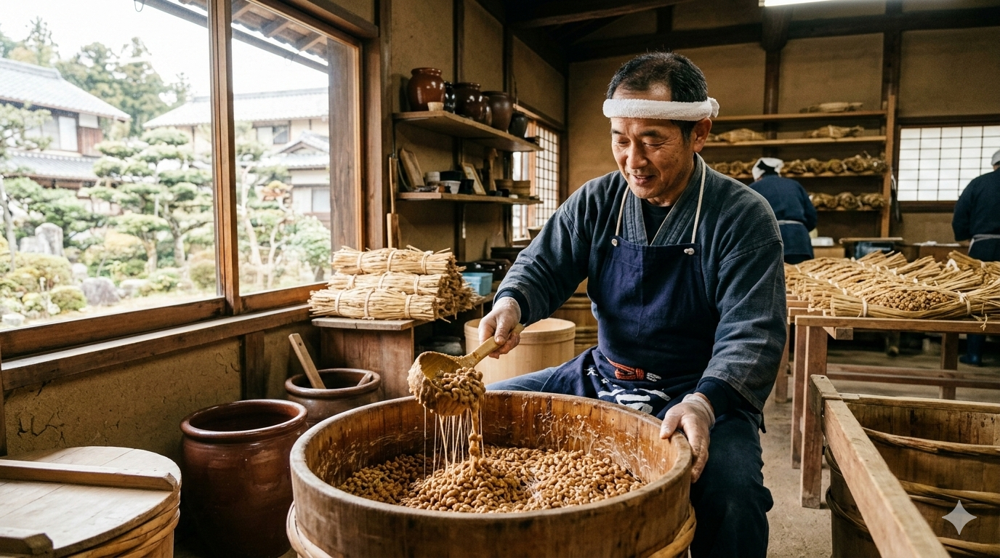
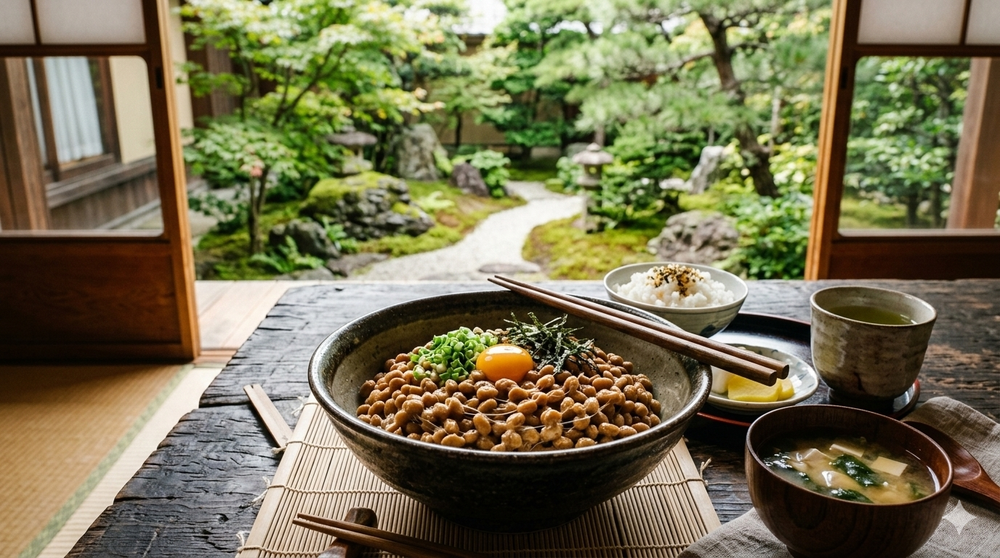

Selamat datang di nattech, destinasi utama Anda untuk natto kualitas premium berbasis bioteknologi pangan. Kami menggabungkan kearifan fermentasi tradisional dengan standar kebersihan modern untuk menghadirkan superfood yang tidak hanya lezat, tapi juga murni dan berkhasiat. Fermentasi adalah kunci utama di balik keunikan Natto. Proses ini terjadi ketika bakteri baik memecah protein kedelai menjadi asam amino yang mudah diserap tubuh, sekaligus menciptakan enzim nattokinase yang sangat langka. Hasilnya adalah makanan dengan tekstur berlendir yang khas, rasa yang earthy, dan segudang nutrisi yang telah menjadi rahasia umur panjang masyarakat Jepang selama berabad-abad.


Menelusuri sejarah natto berarti menjelajahi budaya fermentasi Jepang yang kaya. Secara tradisional, natto dibuat dengan membungkus kedelai rebus dalam jerami padi, di mana bakteri Bacillus subtilis hidup secara alami. Dalam lingkungan yang hangat dan lembap, bakteri ini mulai bekerja, memecah protein kompleks menjadi asam amino dan menciptakan karakteristik tekstur 'neba-neba' (lengket dan berserat) serta aroma earthy yang menjadi ciri khasnya. Meskipun metode produksi modern kini lebih terkontrol menggunakan kultur starter murni di lingkungan pabrik yang steril, prinsip fermentasi yang diwariskan secara turun-temurun tetap menjadi jantung dari setiap suapan natto.
Kekuatan utama natto terletak pada proses fermentasinya yang menggunakan bakteri Bacillus subtilis. Proses ini tidak hanya meningkatkan daya cerna protein dalam kedelai tetapi juga menciptakan enzim unik yang disebut Nattokinase. Enzim inilah yang membuat natto begitu dihargai, karena dikenal memiliki kemampuan alami untuk mendukung kesehatan jantung dan melancarkan sirkulasi darah. Selain itu, natto juga merupakan salah satu sumber alami Vitamin K2 yang sangat kuat, yang sangat krusial untuk menjaga kepadatan tulang dan mencegah osteoporosis.